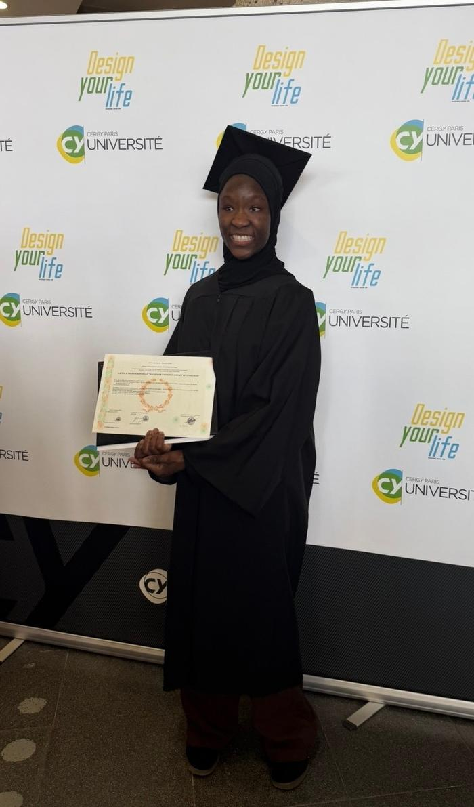
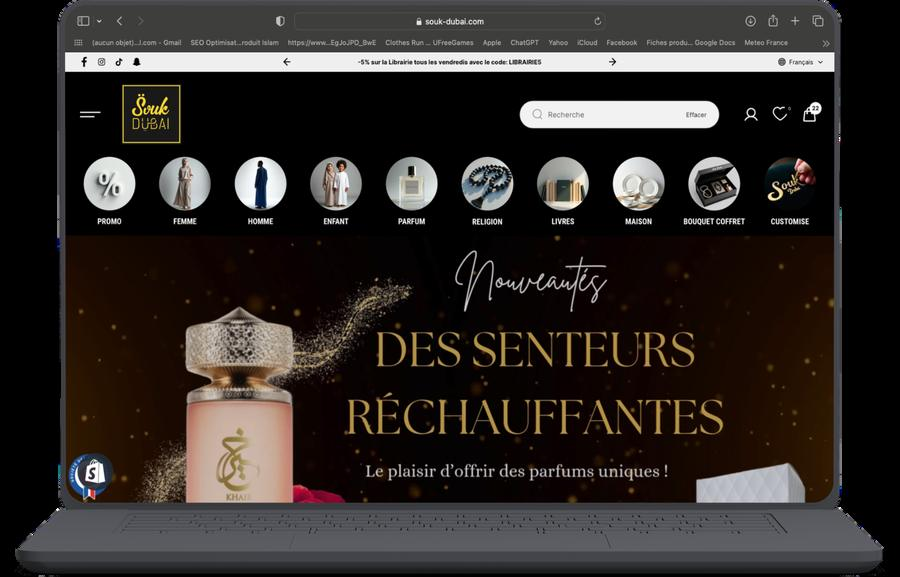
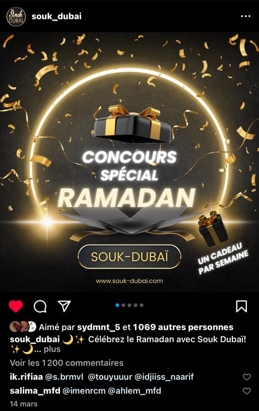
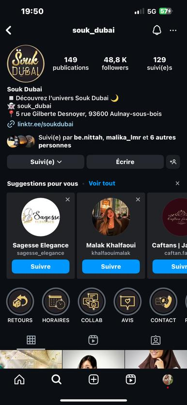
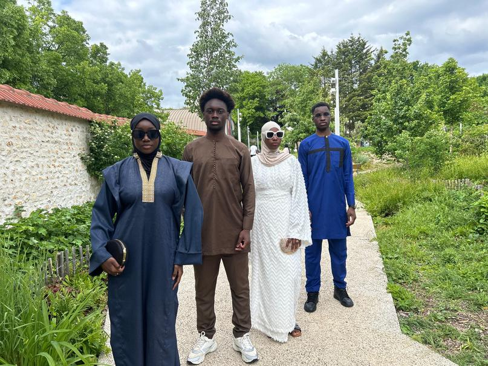
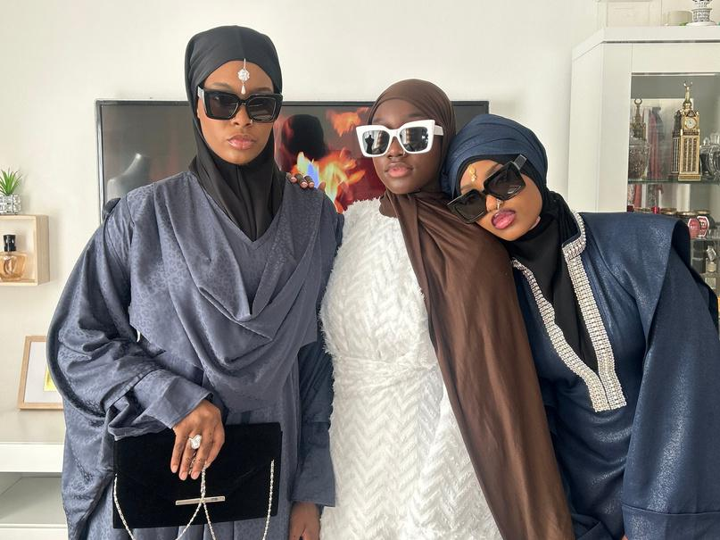
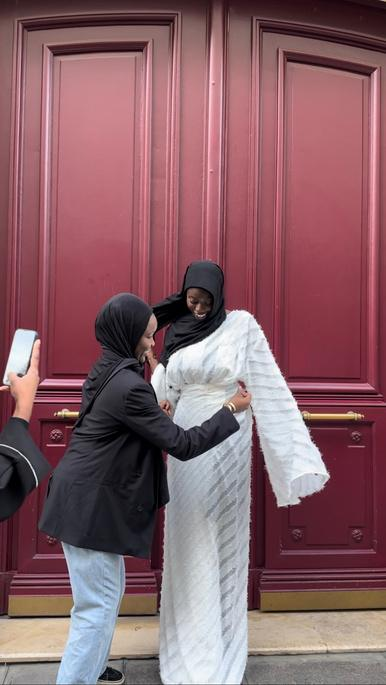
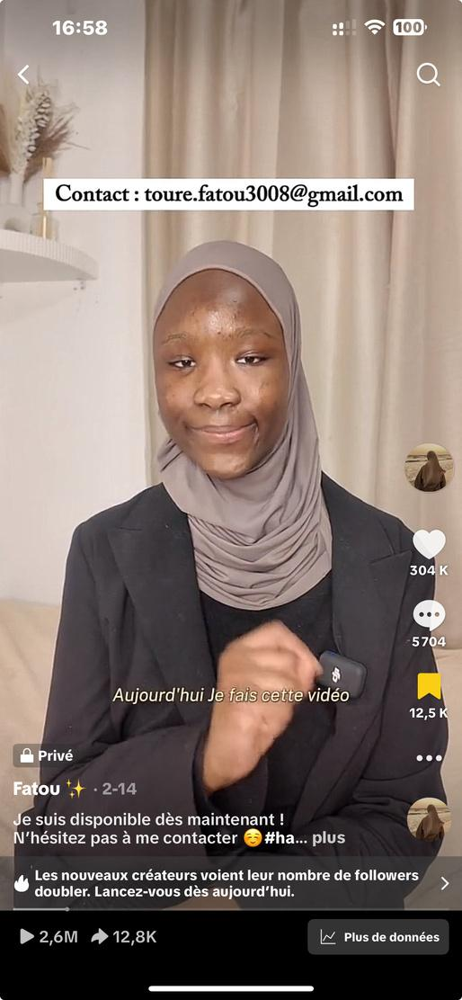
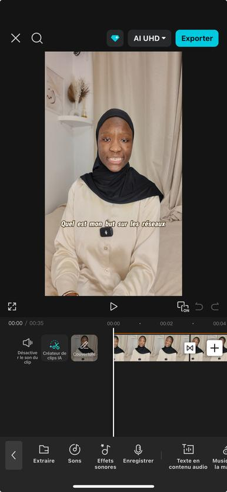

Gestion de projet
- Planning et calendrier de sortie
- Coordination des prestataires
- Budget, production, logistique
- Suivi jusqu'au bilan
Marketing stratégique et opérationnel, gestion de projet et IA appliquée au marketing. Deux ans d'alternance en marketing digital, des lancements pilotés de bout en bout, et l'envie d'en porter de plus grands.

Chaque projet est présenté comme une mission : le contexte, mon rôle, les actions et ce qui en est sorti.
Élue meilleure alternante par l'ensemble de l'équipe.



4 collections et un produit best-seller lancés. Une communauté de 85 000 abonnés sur TikTok et 16 000 sur Instagram.



Plus de 2 millions de vues cumulées et plus de 120 000 abonnés.


La démarche que j'applique à chaque collection et à chaque campagne.
Je rejoins le MSc Manager Marketing & IA de l'INSEEC pour apprendre à mettre l'IA au service des équipes marketing, sans perdre ce qui fait une marque : une idée claire et un vrai lien avec ses clients. Voici les usages que je veux maîtriser et apporter en entreprise.
Je cherche une entreprise où m'investir, porter des projets concrets et évoluer durablement. Disponible dès maintenant pour 24 mois, au rythme de 3 semaines en entreprise et 1 semaine à l'école, à Paris ou en Île-de-France.